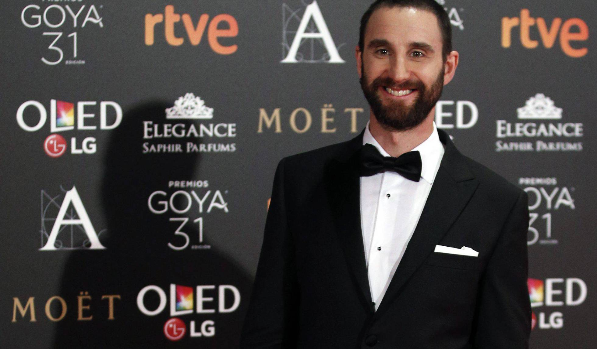

Dani Rovira se deshace en explicaciones por sus ‘tuits’ sobre un anuncio de lencería
Dani Rovira vuelve a pedir perdón. Aunque ya se había disculpado por haber tuiteado: "Atención, hombres de España, no miréis las marquesinas en estos días. No vaya a ser que unas fotos de 'Intimissimi' os tachen de machistas", un mensaje por el que fue "tendencia" en las redes sociales y tildado de machista y poco gracioso. El actor y monologuista ha escrito un largo mensaje en Instagram en el que no solo "vuelve a asumir el error de no haber sabido expresar bien la ironía de mi planteamiento", sino que también asegura que se "siente un poco menos libre de unos años a esta parte".
